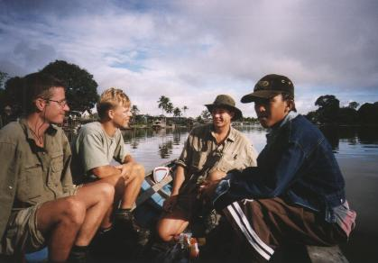

Het volgende artikel is gepucliceerd in het Noord-Hollands Dagblad (Schager Courant) op vrijdag 12 november 1999.
| Jungle-avontuur om nooit te vergeten | |||
Avontuur, wildernis en beproeving. Dat was wat Steven van Noort (28), André Ligthart (25) en Richard Hogetoorn (27) zochten. In de binnenlanden van westelijk Kalimantan (Borneo) vonden de drie vrienden uit Alkmaar dat volop. Na twee maanden zonder enig toeristisch comfort keerden ze vorige week behouden en overlopend van verhalen over hun belevenissen terug. Een klein jaar hadden ze uitgetrokken ter voorbereiding op het grote avontuur. Waterfilters, waterdichte rugzakken en kleding, eigen levensmiddelen, kapmessen en touw, geen tip uit de reisliteratuur werd nonchalant afgewezen. Zelfs de ingenieuze hangtent hadden ze zelf genaaid. Eentje die je tussen bomen kan spannen of op palen neerzet. Het snelwassende rivierwater, tot wel vier meter hoogte, kan anders heel vervelend zijn. De reis ging van Jakarta per boot naar Pontianak en vervolgens langs allerlei dorpjes steeds verder het binnenland van Borneo in. En overal hetzelfde beeld; een stoet van verwelkomende dorpelingen die de vreemde blanken op een ongekende gastvrijheid trakteerden. In het haastige aangeleerde Indonesisch was vriendschap snel gelegd. Alleen één ding begrepen ze niet; hoe haalden die drie Hollandse dwazen het in hun hoofd om zich middenin het oerwoud te laten droppen? "Toen we dat aan een Nederlandse pastor, die daar al derdig jaar in de rimboe zit, vertelden, vroeg hij meteen om familie-adressen, zodat hij de nabestaanden kon inlichten", grijnst Van Noort, voorheen woonachtig in Sint Maarten. Achteraf konden ze het cynisme van de missionaris begrijpen. Acht dagen bivakkeerden ze zonder begeleiding in de jungle, om op een zelfgebouwd vlot de rivier af te zakken. Ligthart: "We wilden de jungle zelf ervaren, het allemaal zelf doen." |
 | ||
Ligthart (l), Van Noort (m) en Hogetoorn genieten even van een kalm boottripje na hun uitputtende overlevingstocht door de jungle | |||
| Voor een half miljoen roepia (slechts f 125) huurden ze een jager met boot in, die hen stroomopwaarts bracht. Onderweg lieten ze zich overweldigen door de fabelachtige natuur van het tropisch regenwoud. Een ondoordringbare zee van bomen, planten en lianen. En dieren natuurlijk. Ligthart: "We voeren langs een groep apen en die jager schoot er pardoes één uit de boom om 'm daarna meteen te fileren. M'n Maag draaide er bijna van om, zo'n luguber gezicht. Wij hebben er niets van gegeten, maar wel van een wild zwijn die ook ter plekke werd geslacht." Toen kwam het moment dat de drie langs de woeste rivier aan hun lot werden overgelaten. En ze hebben het geweten. "Alles was er drijfnat, we konden bijna geen vuur maken. Wat we ook probeerden. Al na een dag hadden we driekwart van onze benzinevoorraad verbruikt. Het duurde soms uren voordat we het hadden branden." En toen het eenmaal oplichtte, diende een ander probleem zich aan. "Mieren. Tjonge, wat kunnen die krengen bijten. Vooral die middelgrote. Ze gaan dwars door je kleren heen", ondervond de oud-Schagenaar Hogetoorn, die bij de insecten in de smaak bleek te vallen. "Op een gegeven moment zoemde er een wesp rond mijn hoofd. Het werden er | daarna steeds meer, op het laatst waren het er honderden. Van die grote zoals je ze hier niet ziet. Steken deden ze niet, maar ik ben wel de rivier ingesprongen." Ook Van Noort en Ligthart kregen hun portie ongedierte. "Op een nacht stortten de palen van onze tent in. We hadden drijfhout uit de rivier gebruikt, maar dat was kennelijk niet zo stevig meer. We zijn toen midden in de nacht half bloot hout gaan kappen. Het stikte van de muggen, we zijn echt helemaal opgevreten." Hun enige uitweg was via het water, met een eigengebouwd vlot. Alleen was enige kennis van houtsoorten op zijn plaats geweest. "Er was daar geen bamboe te bekennen, dat schijnt alleen op het laagland te groeien. We zijn toen hout gaan kappen. Helaas voor ons drijft tropisch hardhout niet. De balken zonken als bakstenen. We hebben toch een klein vlot kunnen maken. Met behulp van onze waterdichte rugzakken en lege colaflessen, die enig drijvend vermogen gaven. De stroming was zeer woest, maar we konden het redden." Al had het één keer weinig gescheeld. Hogetoorn: "We kwamen op een gegeven moment in een enorme draaikolk terecht. Ik ben 1.90 meter lang en stond rechtop, maar we gingen met vlot en al kopje onder. We schrokken ons de pleuris, | omdat Steven overboord was geslagen. We zagen hem niet meer. Hij bleef wel een halve minuut onder water." "Het had ook niet veel langer moeten duren, want ik had geen lucht meer toen ik boven kwam. We stonden met z'n drieën te trillen van de schrik. Avontuur is leuk, maar op zo'n moment vergeet je alles." "Een paar dagen later kwamen we bij een bamboeveld. We zijn daar toen gestopt om eindelijk een goed vlot te gaan bouwen. Net toen we wilden beginnen, stonden er ineens allemaal mensen om ons heen. Bleek dat we op een paar honderd meter van het dorp, ons eindpunt, af waren. We werden ingehaald als helden en in optocht naar het 'rumah teman', wat 'huis voor vrienden' betekent, begeleid. Het halve dorp zat om ons heen, terwijl we zaten te eten. We waren blij dat we er waren, maar ergens ook weer teleurgesteld dat we dat bamboevlot niet hebben kunnen maken." De resterende tijd zijn de drie over Kalimantan getrokken. Overal even uitbundig onthaald. Om nooit te vergeten. "Maar waarvan we eigenlijk vreselijk zijn geschrokken, is dat je dus echt ziet dat het oerwoud verdwijnt. Het laagland is bijna helemaal gekapt en een trieste vlakte. Aleen in de bergen, waar de bulldozers niet kunnen komen, is de jungle nog ongerept." | |